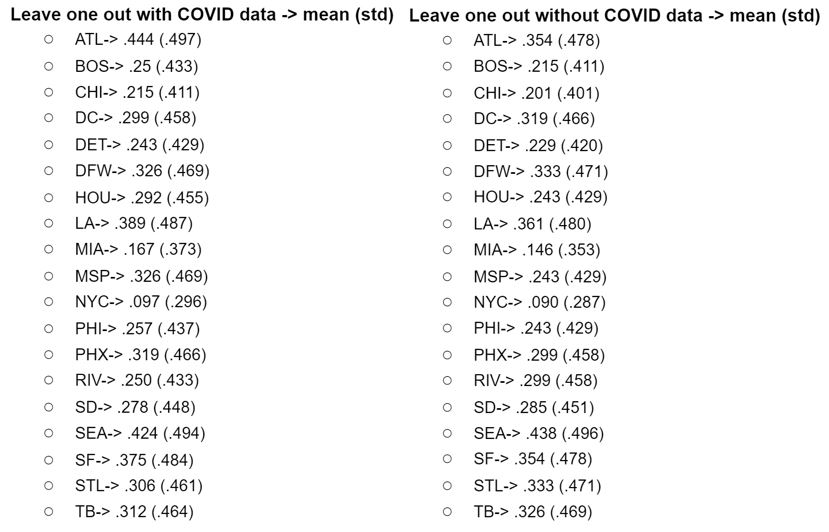
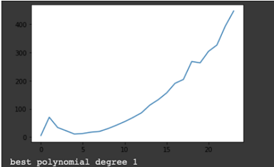
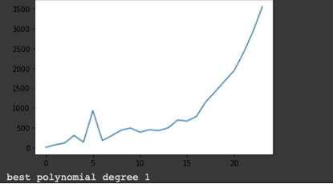
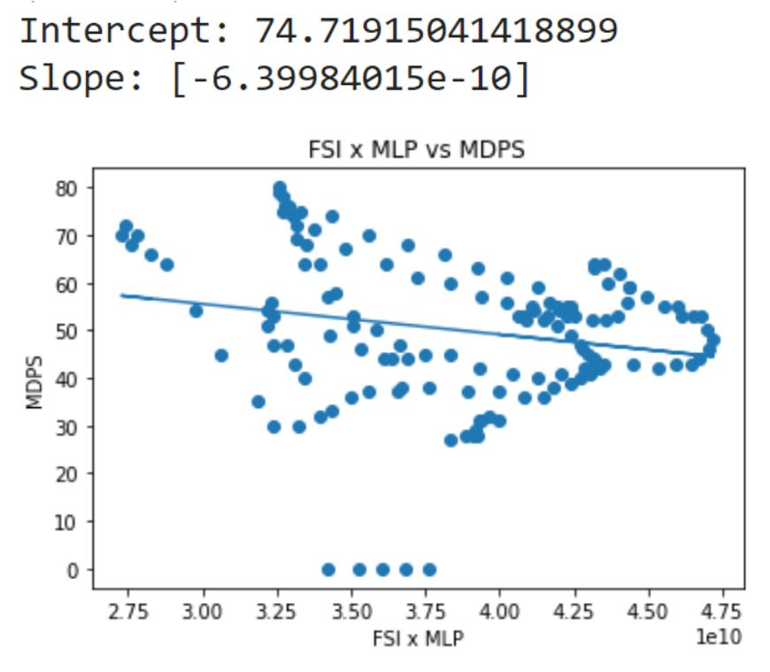
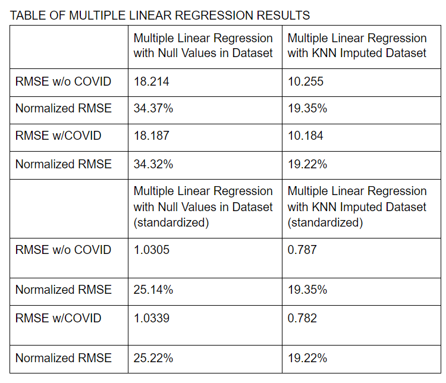
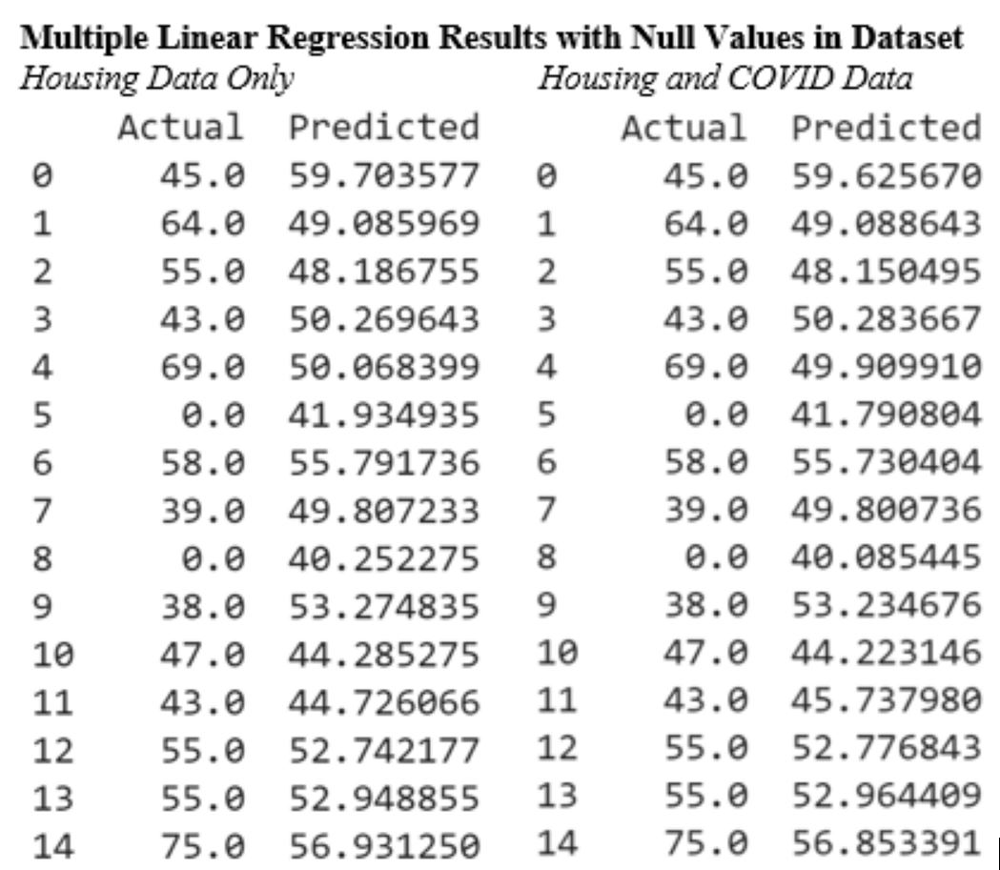
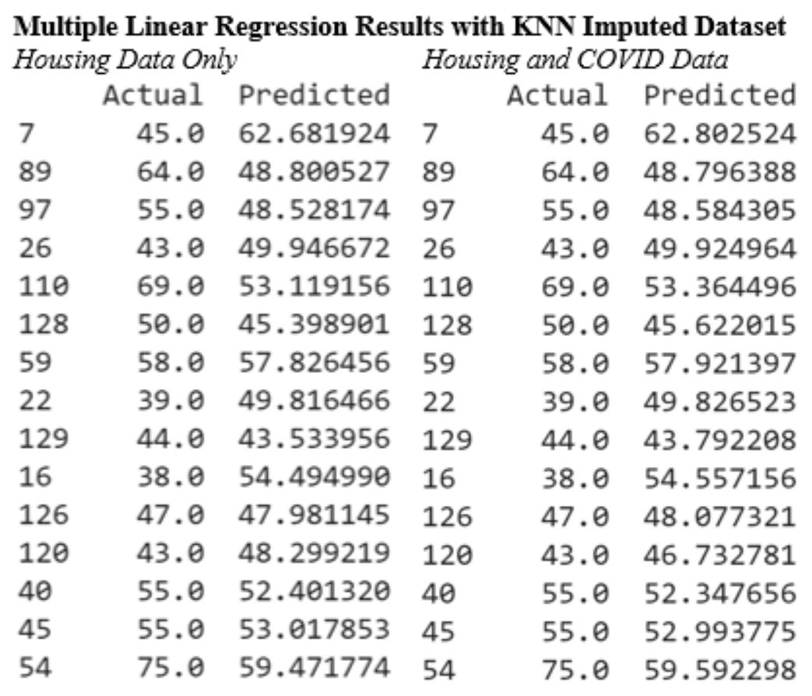
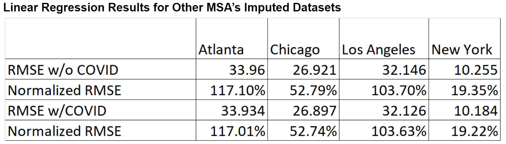

We were hoping to see a difference in a higher mean and a lower standard deviation on our dataset with COVID compared to the one without. The results for the analysis with the COVID data were better for almost all of the cities, but only barely. We determined that the analysis showed that the COVID dataset had a slight effect on the housing market, but the results were too similar to make a definitive statement that COVID specifically was the root cause rather than a fluctuating economy a pandemic.
The first was to impute missing values in our combined housing-COVID feature datasets. While this task could not be validated with a ground-truth, it allowed for complete datasets that could then be used with other Supervised Learning algorithms. The two major variables imputed were median days to pending sale (which was originally missing for the New York MSA for parts of June-July 2020) and For Sale Inventory (which had missing points in Riverside, CA, and Tampa, FL).
The second purpose of K-Nearest Neighbors was to predict the median days to pending sale of time points after October 3, 2020, the cutoff of our training set. We used a test set between October 3 and October 31, 2020, and attempted to predict the median days to pending sale for the testing weeks. The elbow method was used in each city to tune the hyperparameter of number of neighbors. In New York and Los Angeles, our predictions returned equivalent predictions and low (less than or equal to 1) RMSE values for both datasets, which can be attributed to low impact of COVID on the high-demand and high-price housing markets in both cities. However, in Chicago, a city with relatively cheaper list prices and lower inventory (indicating lower supply and demand), the pandemic had a larger impact on the housing market, with prices being higher and available inventory being lower during the pandemic. Therefore, Chicago’s KNN regressions yielded different results when COVID was accepted and ignored, but both RMSE values remained below 1. This indicates that, for our small testing dataset, KNN regression was very effective in predicting future housing demand based on both existing housing factors as well as COVID cases in an area. However, one potential drawback of the approach taken would be that the training-testing split was very skewed in the non-COVID dataset. While the COVID dataset had a 90-10 split of relevant data (those with actual COVID cases), the non-COVID dataset’s split was 36:1 in favor of training data, which means that for non-COVID prediction, the predictions could be swayed by the high amounts of training data. Nevertheless, the prediction of median days to pending sale using KNN regression was an overall success and gave us useful insights.
Explanation of visuals: In the RMSE graph, red factors in COVID while green doesn't. In the 2D and 3D graphs, red dots are training weeks, and green are our testing weeks.
In the RMSE graph, where there is only one point for a given number of neighbors, this means that COVID data played no difference in RMSE.
Our goal while doing polynomial regression was to find the model which leads to the lowest errors. We did this by doing polynomial regression on degrees 1-25 using our features For- Sale Inventory and Median-List Price to predict the median days to sale.
The RMSE plot is shown above and polynomial degree 1 has the lowest RMSE value.
Here is our RMSE plot with covid and the polynomial degree one has the lowest RMSE but the difference between the RMSE values of the regression with and without covid features are negligible which tells us that the number of Covid cases is not the best deciding feature to predict median days to sale.
We began with simple linear regression by multiplying the two housing data features (median list price and for-sale inventory) together into one independent variable and using median days pending to sale as the dependent variable. We found that using a train-test split of 90-10 produced the best results for the New York city dataset. The RMSE value was about 19.4699 which normalizes to about 36.74% of the range which signifies that the model is not very strong with making predictions.
We realized that we could not combine COVID case data to the two housing features in a logical way for one independent variable, so we shifted to multiple linear regression.
Including COVID data had a lower normalized RMSE value by .0509%, but the decrease in RMSE is so small that including the COVID case data does not seem to make a difference in the model's performance. Additionally, the RMSE values were still about the same compared to the simple linear regression model.
Next, we tried standardizing our dataset to help lower our RMSE values. Standardization seemed to help reduce RMSE values by almost 9%. Differences between the two models' RMSE values were still pretty negligible though. These models are slightly better predictors compared to before, but they are still not that good. After further analysis, we determined that data could use KNN imputation for missing data points and improving our RMSE values.
The model seems to predict very poorly for the major cities other than New York, but the RMSE values are consistently slightly lower when COVID data is included as a feature. This could mean that COVID has a very very slight effect on the median days pending to sale feature, but the effect is nearly negligible.
